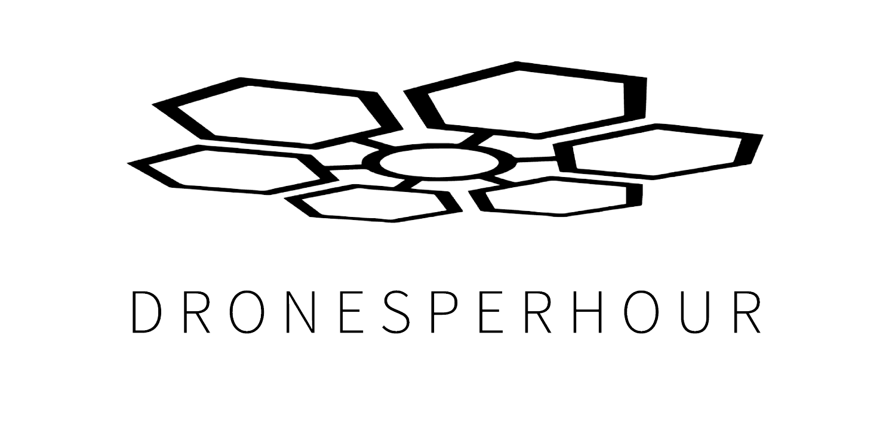

Dualer Student Maschinenbau
Dronesperhour GmbH
Entwicklung und Integration von LED-Drohnensystemen — von der Anforderungsanalyse und mechanischen Konstruktion über eigene Leiterplatten bis zu Inbetriebnahme, Systemtest und Validierung.

DPS / UAV SYSTEM / INTEGRATION EXTERNAL ↗